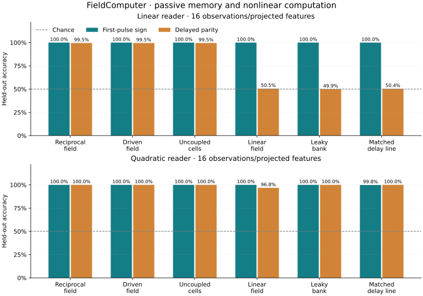

Numerical archive fidelity and finite runs
2025 scout archive · experiment of 12 October 2026
Can the old field compute?
This tested adaptation of the archived field retained readable history and performed nonlinear delayed-parity classification. Its incremental response to a common probe also carried history information. No comparative advantage for reciprocal coupling was established. The driven field and uncoupled nonlinear cells matched its passive scores; spatial interactions and scout feedback were unnecessary on these tasks.
Five environments. 1,280 held-out episodes. Four spatial sensors. All controls and failures included.
Readable first-pulse memory
Nonlinear delayed parity
History-conditioned incremental probe response
Advantage over alternative computers with the same reader family

Read the past from a later response
Two signed pulses enter the wave field. After a quiet interval, the reader tries to recover the first sign and the relationship between the two signs. A cloned continuation with a common probe tests whether history changes the incremental response. Passive readings use one 2318-variable trajectory and 16 raw measurements; the incremental test uses two replicas and 32 raw measurements to produce 16 differences.
What this establishes
This is a numerical task demonstration in an adaptation of the archived equations. The delay-line baseline matches retained numerical state; the leaky bank uses much less. Those input-history controls have noiseless observations, favoring them in the comparison. The result does not establish physical efficiency, intelligence, or a benefit from the fixed fractal landscape.
Every measured comparison
Mean test accuracy across seeds; chance is 50%. “Incremental” is probed minus unprobed continuation.
| Computer | Observation | Reader | First sign | Parity |
|---|---|---|---|---|
| State-matched delay line + PCA | passive | linear | 100.0% | 50.4% |
| State-matched delay line + PCA | passive | quadratic | 99.8% | 100.0% |
| Driven field | incremental | linear | 94.8% | 88.1% |
| Driven field | incremental | quadratic | 98.0% | 97.7% |
| Driven field | passive | linear | 100.0% | 99.5% |
| Driven field | passive | quadratic | 100.0% | 100.0% |
| Erased history | probed | linear | 50.7% | 50.4% |
| Erased history | probed | quadratic | 49.6% | 51.5% |
| 16-state leaky bank | passive | linear | 100.0% | 49.9% |
| 16-state leaky bank | passive | quadratic | 100.0% | 100.0% |
| Linear wave field | incremental | linear | 52.4% | 51.5% |
| Linear wave field | incremental | quadratic | 50.9% | 49.6% |
| Linear wave field | passive | linear | 100.0% | 50.5% |
| Linear wave field | passive | quadratic | 100.0% | 96.8% |
| Reciprocal field | incremental | linear | 94.8% | 88.0% |
| Reciprocal field | incremental | quadratic | 98.0% | 97.7% |
| Reciprocal field | passive | linear | 100.0% | 99.5% |
| Reciprocal field | passive | quadratic | 100.0% | 100.0% |
| Shuffled train/validation labels | passive | linear | 61.9% | 45.3% |
| Shuffled train/validation labels | passive | quadratic | 57.0% | 47.1% |
| Uncoupled nonlinear cells | incremental | linear | 95.1% | 88.3% |
| Uncoupled nonlinear cells | incremental | quadratic | 98.0% | 97.9% |
| Uncoupled nonlinear cells | passive | linear | 100.0% | 99.5% |
| Uncoupled nonlinear cells | passive | quadratic | 100.0% | 100.0% |
Reproduce and inspect
Full report · Protocol and correction · Complete seed data · Source repository
python -m fieldcomputer.experiment